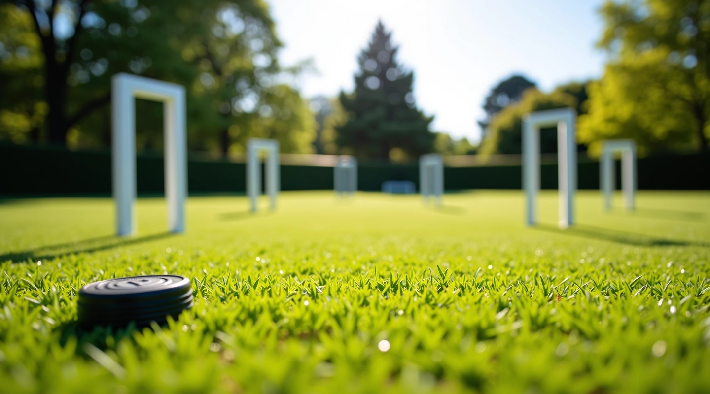

دليل استراتيجية التقشير والترك في الكروكيه
تعلم تقنيات متقدمة لإتقان لعبة الكروكيه مع خطوات عملية وواضحة

ما هي استراتيجية التقشير والترك؟
تقنية التقشير والترك من أهم المهارات في الكروكيه. تتضمن هذه الاستراتيجية ضربة دقيقة تفصل كرتك عن كرة الخصم بعد الاصطدام، مما يسمح لك بالتحكم بموقعك على الملعب. إتقان هذه التقنية يغير طريقة لعبك تماماً.
سواء كنت مبتدئاً تتعلم الأساسيات أو لاعباً متقدماً تبحث عن تحسين أدائك، هذا الدليل يقدم لك شرحاً واضحاً خطوة بخطوة. نركز على الممارسة العملية والتطبيق الفعلي بدلاً من النظرية المعقدة.
اقرأ المزيد عن منهجناأساسيات التعلم
ستتعلم هذه المهارات الأساسية في رحلتك مع الكروكيه
الوقفة الصحيحة
تعلم كيفية الوقوف والمسك الصحيح للمضرب لضمان دقة الضربة
قوة الضربة
فهم كيفية التحكم بقوة الضربة والمسافة المطلوبة في كل موقف
حساب الزوايا
احسب الزوايا بدقة لتحقيق الانفصال المثالي بين الكرات
التحكم بالكرات
أتقن تقنية التحكم بموقع كرتك وكرة الخصم على الملعب
مقالات مميزة
اختر من أفضل الدروس والمقالات المتعلقة باستراتيجية الكروكيه


فوائد التعلم المنظم
ما الذي ستحصل عليه من خلال متابعة دليلنا الشامل
دقة محسّنة
اكتسب القدرة على الضرب بدقة عالية في كل الظروف
تقدم سريع
تعلم بطريقة منظمة تضمن تحسناً ملموساً في أدائك
ثقة أكبر
لعب بثقة وتحكم أفضل عندما تفهم تماماً ما تفعله
خطوات التعلم الفعالة
اتبع هذه الخطوات الأربع لإتقان استراتيجية التقشير والترك
فهم الأساسيات
تعرف على مبادئ اللعبة والمصطلحات الأساسية
التطبيق العملي
مارس الحركات الأساسية على الملعب بإشراف
إتقان التقنيات
طبق التقنيات المتقدمة في حالات مختلفة
المنافسة الحقيقية
شارك في مباريات فعلية وطبق ما تعلمته
مجالات التركيز
نغطي جميع جوانب لعبة الكروكيه الاحترافية
تقنيات الضرب
أنواع الضربات المختلفة وكيفية تطبيقها بفعالية
التخطيط الاستراتيجي
تخطيط حركاتك وتوقع خطوات الخصم
التدريب والممارسة
برامج تدريبية منظمة لتحسين مستواك
لعب الفريق
التنسيق والعمل الجماعي في البطولات
تحليل الملعب
قراءة الملعب واستخدام الأرض لصالحك
الأداء المتقدم
تقنيات متقدمة للاعبين ذوي الخبرة
هل تريد أن تبدأ رحلتك في الكروكيه؟
تواصل معنا للحصول على مزيد من المعلومات والدعم المباشر. سنساعدك في اختيار البرنامج المناسب لمستواك
تواصل معنا الآنالبريد الإلكتروني
احصل على إجابات سريعة لأسئلتك عبر البريد
الاستشارة المباشرة
تحدث مباشرة مع متخصصينا عن احتياجاتك
جدولة الدروس
اختر الوقت المناسب لك لبدء التدريب
نستخدم ملفات تعريف الارتباط لتحسين تجربتك. بالمتابعة، فأنت توافق على سياسة الخصوصية لدينا.